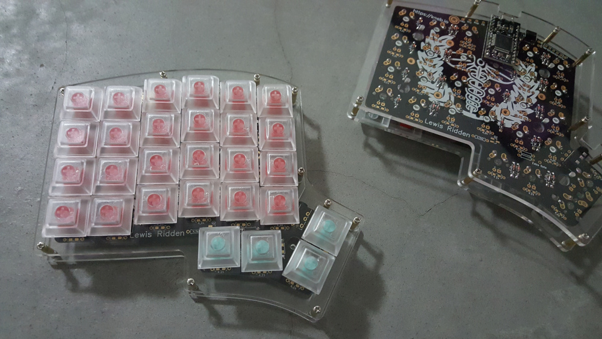

Having spend almost a year typing on the Kinesis Advantage both at work and at home after learning to touch type, I got a little curious about one of those DIY keyboard kits. Yes, /r/mechmarket can be a dangerous place...
My first mechanical keyboard was a Ducky with cherry red switches, and then a Topre Realforce came about shortly after. I missed the quiet and lighter feel of those, though that's not to say I don't like the brown switches that the Kinesis keyboards come with. Choices... as they say.
So when I heard about the Iris keyboard, I decided to build a one with red (opting for cheaper Kalih) switches. I will avoid elaborating too much on the build process, there's already a very nice build guide published by the guys at Keeb.io.
If you're handy with a soldering iron, this will take you around an hour to two to put together. Flashing the firmware with QMK is also pretty straightforward, nothing complicated here. I replicated most of the layout on the Kinesis on the default layer, adding one more for some additional symbol and arrow keys but that's pretty much it. (I don't like switching between layers to be honest, I find the whole process too slow but that's just me)
My initial impressions are pretty positive. While I definitely don't think that this will be replacing the Kinesis Advantage(s) as my main workhorse, they are a fun alternative to switch to now and then. I don't have plans to tent them but I believe they would be a bit more comfortable to type on with some tenting.
Here's the keyboard set up with spare keycaps:
